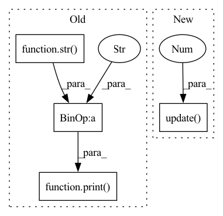

Pattern ID :16082

Before Change
writer.add_scalar("Refine/loss_per", loss_per.item(), iteration)
loss_all.backward()
optimizer.step()
print("loss:"+str(loss_all.item()))
print("lr:"+str(scheduler._last_lr[0]))
iteration += 1
scheduler.step()
After Change
if get_rank() == 0:
interior_step_bar.update(1)
// print(f"Batch: {i}/{len(train_loader)} epoch {epoch}")
img = batch.cuda(non_blocking=True)
In pattern: SUPERPATTERN
Frequency: 3
Non-data size: 4
Instances
Fragment ID: 53999015
Project Name: montaellis/framework-of-gan-inversion
Commit Name: e395662415889bea6fbc80cfc80d1fbff249835e
Time: 2021-10-19
Author: elliszkn@163.com
File Name: train_ddp.py
M Class Name: AnonimousClass
N Class Name: AnonimousClass
M Method Name: train(0)
N Method Name: train(0)
M Parent Class:
N Parent Class:
M File Name: train_ddp.py
N File Name: train_ddp.py
M Start Line: 208
M End Line: 265
N Start Line: 99
N End Line: 291
'>
Before Change
total_loss += loss
waste_time = time.time() - start_time
print("\nEpoch:"+ str(epoch+1) + "/" + str(Epoch))
print("iter:" + str(iteration) + "/" + str(epoch_size) + " || Total Loss: %.4f || %.4fs/step" % (total_loss/(iteration+1),waste_time))
start_time = time.time()
After Change
loss = sum(losses)
val_loss += loss
pbar.set_postfix(**{"total_loss": val_loss.item() / (iteration + 1)})
pbar.update(1)
print("Finish Validation")
print("Epoch:"+ str(epoch+1) + "/" + str(Epoch))
'>
Fragment ID: 53999014
Project Name: bubbliiiing/yolo3-pytorch
Commit Name: d67b456f0551b5565d1be3339b446ca601d1078c
Time: 2020-07-28
Author: 47347516+bubbliiiing@users.noreply.github.com
File Name: train.py
M Class Name: AnonimousClass
N Class Name: AnonimousClass
M Method Name: fit_ont_epoch(9)
N Method Name: fit_ont_epoch(9)
M Parent Class:
N Parent Class:
M File Name: train.py
N File Name: train.py
M Start Line: 20
M End Line: 71
N Start Line: 28
N End Line: 85
'>
Before Change
total_loss += loss
waste_time = time.time() - start_time
print("\nEpoch:"+ str(epoch+1) + "/" + str(Epoch))
print("iter:" + str(iteration) + "/" + str(epoch_size) + " || Total Loss: %.4f || %.4fs/step" % (total_loss/(iteration+1),waste_time))
start_time = time.time()
// 将loss写入tensorboard，下面注释的是每个世代保存一次
After Change
pbar.set_postfix(**{"total_loss": total_loss.item() / (iteration + 1),
"lr" : get_lr(optimizer),
"step/s" : waste_time})
pbar.update(1)
start_time = time.time()
'>
Fragment ID: 53999024
Project Name: bubbliiiing/yolov4-pytorch
Commit Name: c1c7677c0d9837682dfc807b39415bb4b9a1cb3c
Time: 2020-07-28
Author: 47347516+bubbliiiing@users.noreply.github.com
File Name: train_with_tensorboard.py
M Class Name: AnonimousClass
N Class Name: AnonimousClass
M Method Name: fit_ont_epoch(10)
N Method Name: fit_ont_epoch(10)
M Parent Class:
N Parent Class:
M File Name: train_with_tensorboard.py
N File Name: train_with_tensorboard.py
M Start Line: 37
M End Line: 96
N Start Line: 45
N End Line: 113